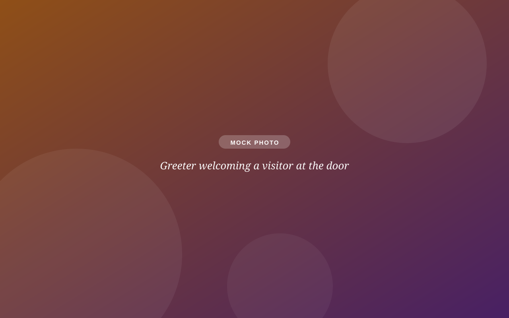

Pastoral care, prayer, baptism, weddings
Pastor Yolanda: pastoryolanda@sothchurch.com
Contact & directions
Question, prayer request, visit plan, or just curiosity: pick whichever way of reaching us feels easiest. Nothing goes into a void.

Pastor Yolanda: pastoryolanda@sothchurch.com
Aym McGrew: cyf@sothchurch.com
Shawn Wacholz: office@sothchurch.com
9:30 AM, every week. The coffee's on at 10:30 and the welcome is real.